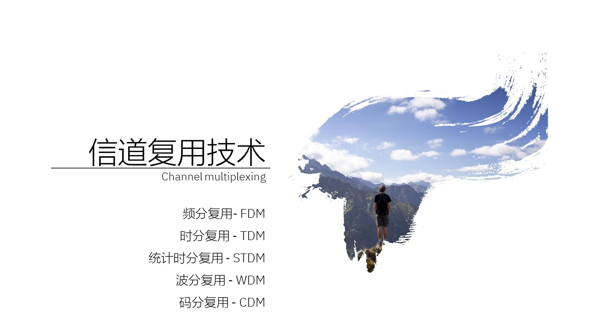
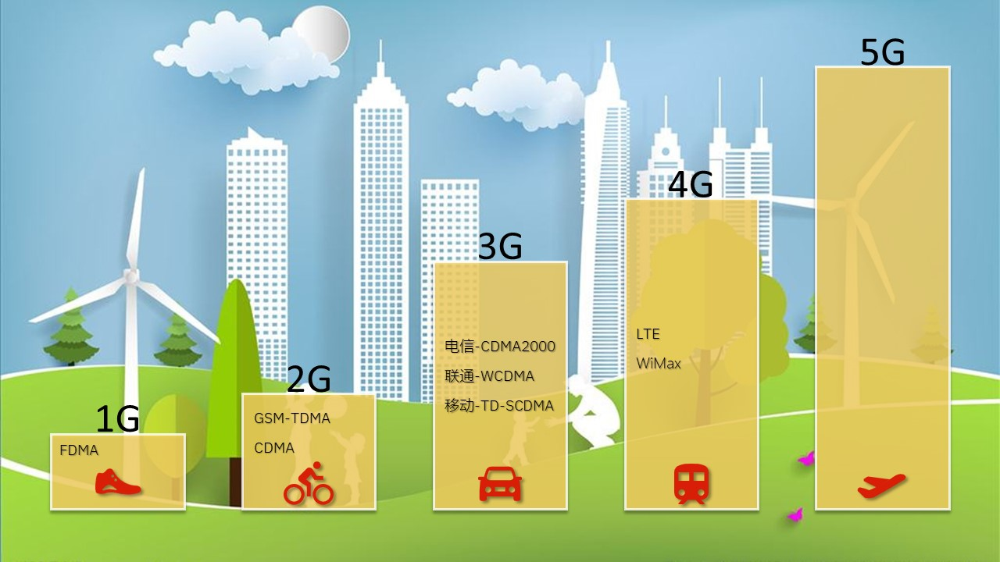
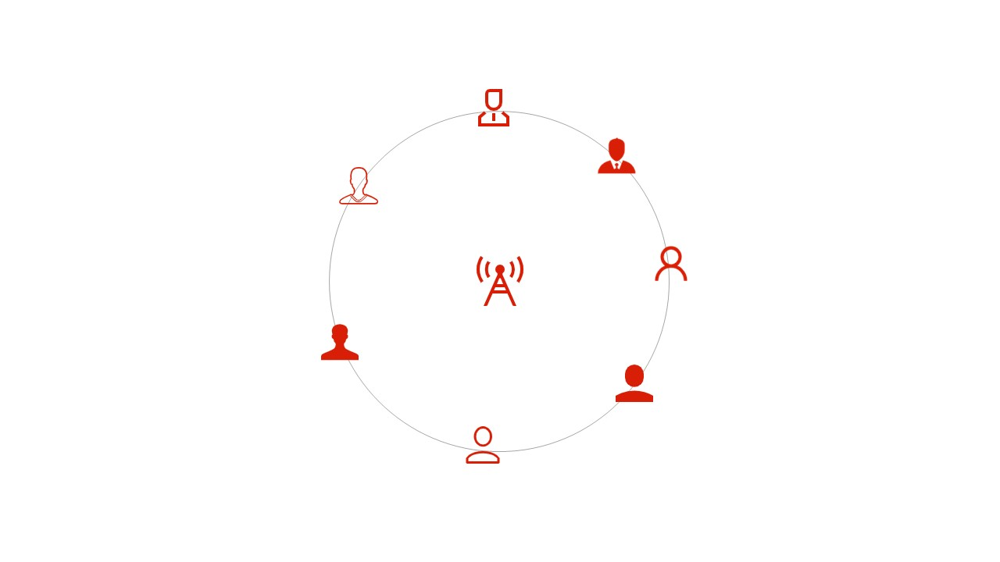
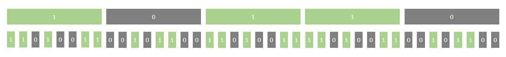

- 概述 Overview
- 在通信系统中，将若干个彼此独立的信号，合并到单一信道中，同时传输的 信号处理 技术
- 应用层面：物理层 信号传输
- 主要目的：提高信道利用率
- 典型场景：有线传输网络
- 关注重点：信号合并与分离
- 频分复用 FDM
- Frequency Division Multiplexing
- 原理：将可用频带划分为多个互不重叠的频段，每个信号占用一个频段
- 特点：各信号同时传输，通过频率区分
- 应用：传统广播电视、有线电视系统
- 时分复用 TDM
- Time Division Multiplexing
- 原理：将时间划分为等长时隙，各信号轮流使用整个频带
- 特点：各信号分时传输，通过时间区分
- 应用：数字电话系统、PCM传输系统
- 码分复用 CDM
- Code Division Multiplexing
- 原理：各信号用不同编码调制，共享时间和频率资源
- 特点：抗干扰强，保密性好
- 应用：军事通信、移动通信
- 统计时分复用 SDM
- Statistical TDM
- 原理：根据实际需求动态分配时隙，提高线路利用率
- 特点：智能分配，适应业务量变化
- 应用：现代数据通信网络
- 波分复用 WDM
- Wavelength Division Multiplexing
- 原理：在光纤中使用不同波长(颜色)的光信号传输不同数据
- 特点：大幅提高光纤传输容
- 应用：光纤骨干网络
- 空分复用 SDM
- 模分复用 MDM

多址/接入技术 Access
- 如何让多个用户共享同一通信资源
- 应用层面：网络层 多用户接入
- 主要目的：实现多用户共享资源
- 典型场景：无线移动通信
- 关注重点：用户识别和管理

- 频分多址 FDMA
- Frequency Division Multiple Access
- 基于FDM技术的多址接入方式
- 为每个用户分配不同的频率信道 Frequency
- 用户间干扰小
- 频率利用率低
- 早期用于1G通信
- 时分多址 TDMA
- Time Division Multiple Access
- 基于TDM技术的多址接入方式
- 为每个用户分配不同的时隙 – Slot
- 频率利用率高
- 需要精确同步 - 串音
- 早期用于2G通信，现在广泛应用于程控电话交换网络(固话)
TDM
- 码分多址 CDMA
- Code Division Multiple Access
- 基于CDM技术的多址接入技术
- 不同的用户可以在相同的时间使用同一频率通信
- 抗干扰性比较好
- 早期用于3G通信
- 最早起源于第二次世界大战期间；早期多用于军事通信
- 1989年 高通公司将改技术用于商业手机网络
- 1993年 美国批准第一个CDMA标准IS95为2G标准
- 1994年 香港建成世界上第一个CDMA商用网络
- 2000年 中国联通与高通签署协议，CDMA进入中国大陆
- 2001年 CDMA手机开始大规模销售
- 2007年 澳大利亚第一个关闭了CDMA网络
- 2018年 中国电信宣布逐步关闭CDMA网络
CDMA
CDMA
- 扩频通信
- 基站的每一个bit都被转换成m个bit，所以基站发送数据的速率提高到原来的m倍，相应的，所用带宽也提高到原来的 m 倍 - 扩频通信
- 直接序列扩频 DSSS-Direct Sequence Spread Spectrum
- 跳频扩频 FHSS-Frequency Hopping Spread Spectrum

扩频
- 用户识别
- 用户分配一个唯一的m bit长度的彼此 正交 的码片序列-伪随机码，实现了不同用户互不干扰的在同一时间上共享信道
- 发送 1 时，发送自己的码片
- 发送 0 时，发送自己码片的反码
- 按照国际惯例，1为+1，0为-1，所以用户码片为（-1 -1 -1 +1 +1 -1 +1 +1 ）
- 正交向量
- 用户码片可以使用向量表示
- 如果向量 S 和向量 T 的规格化内积 inner product 为 0，则说明向量S 和向量 T 是正交的
- 任何一个向量 S 和它自己的规格化内积都为 1
- 任何一个向量 S 和它反码的规格化内积都为 -1
向量规格化内积的值只能是：-1、0、1
已知向量S为（-1-1-1+1+1-1+1+1），向量T为（-1-1+1-1+1+1+1-1），判断两者是否正交
- 答：
- 二者的规格化内积为 0，所以向量S和向量T是正交的
- 请自行验证两个向量和自身及自身反码的规格化内积分别是多少
4个站进行CDMA通信，其码片序列分别是：
A：（-1-1-1+1+1-1+1+1）
B：（-1-1+1-1+1+1+1-1）
C：（-1+1-1+1+1+1-1-1）
D：（-1+1-1-1-1-1+1-1）
如果收到的码片序列 S 是（-1+1-3+1-1-3+1+1），问：哪个站发送数据了？发送的数据是什么？
- 答：
- 通信的每个基站都知道其他基站的码片序列 - 通信的前提
- 接收端收到的总码片序列 S 是所有发送站信号的线性叠加
- 如果 S 站要判断是否接收目标站 X 站的数据，需分别计算接收序列 S 与目标站 X 的规格化内积
- 如果为 +1，则 X 站发 1
- 如果为 -1，则 X 站发 0
- 如果为 0，则 X 站不发数据
- ∵ S X A = +1
- ∴ A 发 1
- ∵ S X B = -1
- ∴ B 发 0
- ∵ S X C = 0
- ∴ C 没有发数据
- ∵ S X D = +1
- ∴ D 发 1
- Reading
- Multiplexing
- Frequency
Division Multiple Access (FDMA)
- Code Division
Multiple Access (CDMA)
- Global
System for Mobile Communications (GSM)
- TDMA - 5G
- Simplex Communication
- Duplex Communication
- Full-Duplex: A Guide to Uninterrupted
Communication